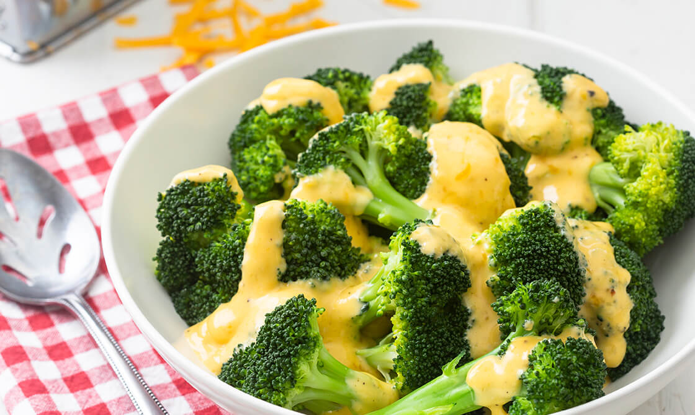

Cheddar Broccoli

Description
Tender, crisp broccoli gets a creamy cheese sauce in this easy, delicious side dish. Use your favorite cheddar cheese or another melting cheese, such as Gruyère or a soft blue cheese, updating the macros accordingly, of course. The sauce is best made and served right away.
Ingredients:
- 10 oz Broccoli florets
- 1/2 cup Heavy cream
- 1 tbsp Butter
- 1 tsp Dijon mustard
- 1/2 tsp Onion powder
- 1/2 tsp Garlic powder
- 1/2 tsp Pink himalayan salt
- 1/2 tsp Ground black pepper
- 6 oz Edamame pods
- 3 oz (1 cup) grated Cheddar cheese
- (optional) 1 tsp Chili flakes
Instructions:
- Place frozen broccoli into air fryer, fry at 350 F for 7 minutes. Microwave edamame for 2 minutes.
- Meanwhile, in a medium pot, bring the cream and butter to a simmer on medium-high heat, stirring often, until the mixture slightly reduces and thickens, about 5 minutes. Stir in the mustard, garlic powder, onion powder, salt, pepper, and [chili flakes]. Remove from the heat and slowly whisk in one-quarter of the cheddar cheese at a time, whisking until the mixture is smooth between additions.
- Plate the steamed broccoli, top with the cheese sauce edamame. Enjoy!
Back to index of Recipes